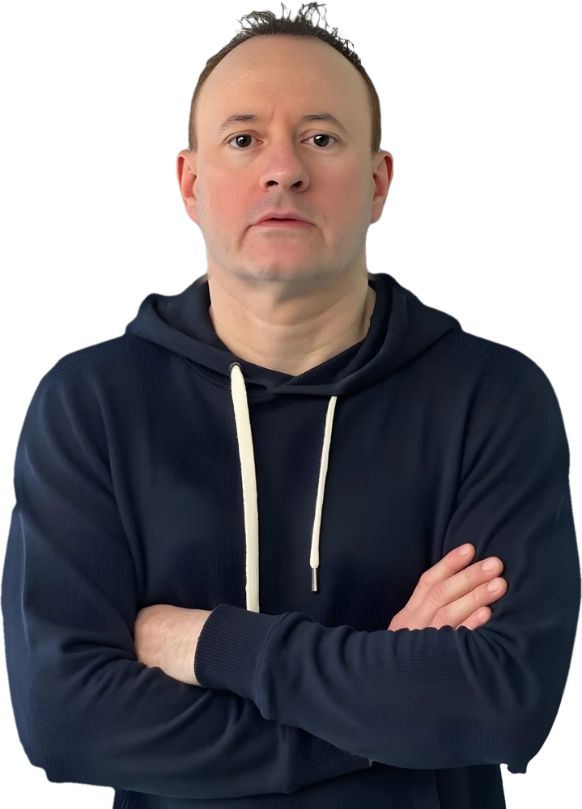

Available now for interim engagements
Ian Lloyd
Interim transformation director. Brought in by CEOs and private equity sponsors when a business needs to change how it operates as it scales or is sold.
Working through my company, Ripple Fusion.

Hire me as your interim transformation director.
Book a callI'm an interim transformation director with 20+ years' experience, brought in by private equity-backed and global businesses to scale without service slipping: separating the business, integrating acquisitions, redesigning the target operating model and taking cost out.
I work alongside CEOs, boards and leadership teams, and I stay until the results are delivered. AI and automation are levers, used where they pay back, not the starting point. Audit experience across pharma and financial services keeps me close to the data and process detail that matters as regulation tightens.
Ripple Fusion is my interim and advisory business transformation practice for private equity-backed businesses and global enterprises. See how I work with businesses.
Based in Kent, working across the UK, Europe and beyond. I speak English and conversational Spanish.
Results I've delivered.
- VistraEQTLed an $85m programme and 300+ people across four regions. It made the business sale-ready, a significant factor in the $6.5bn sale.
- British American TobaccoSeparated the business from its incumbent service provider over a two-year transition. $130m+ annual savings across 180+ markets.
- Pest Control PartnershipPartners GroupBuilt an acquisition production line: 9 businesses across 5 countries brought onto one way of working, at 2 a month.
- IQVIACPPIB and TPGTurned around a failing $40m programme ahead of the IPO, restoring $50m of revenue.
- MarlinkProvidenceTook over a stalled transformation and cut the projected overspend from $3m to $1m.